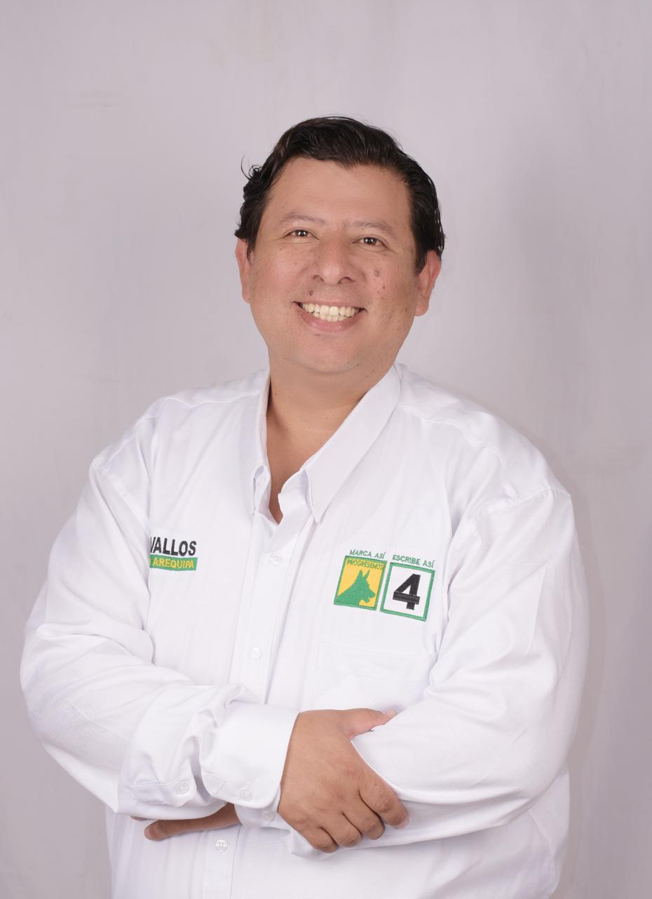
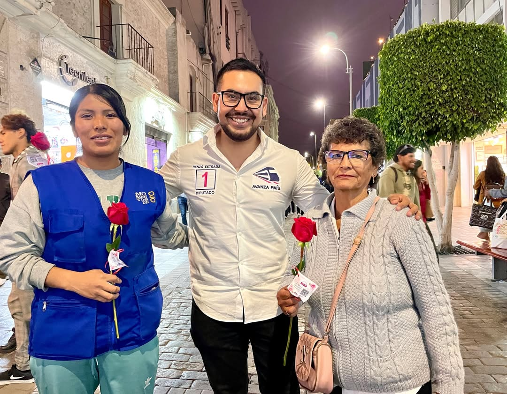
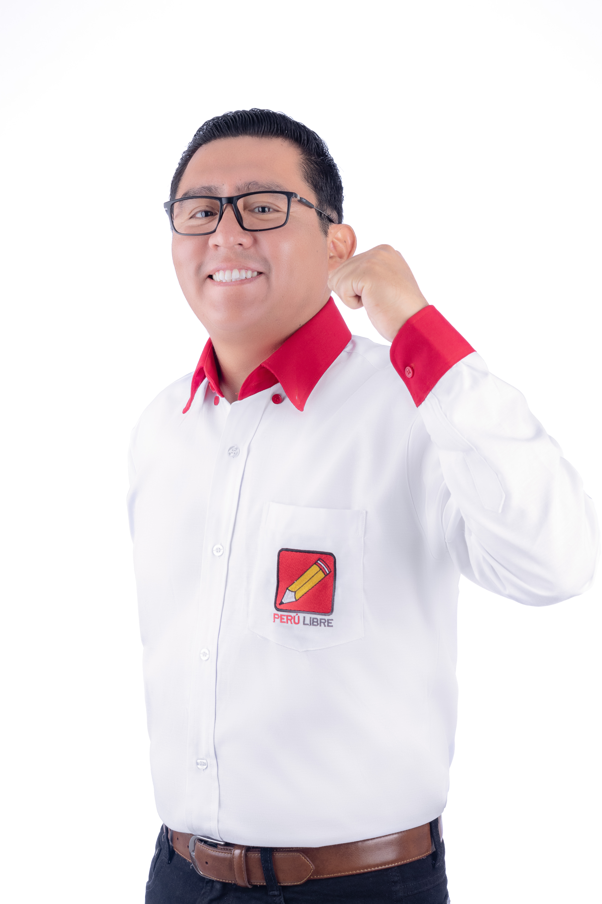
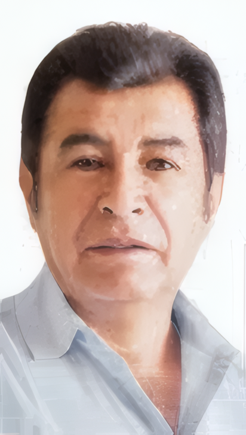
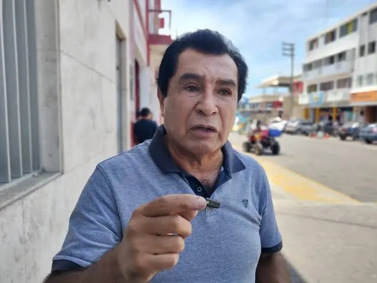
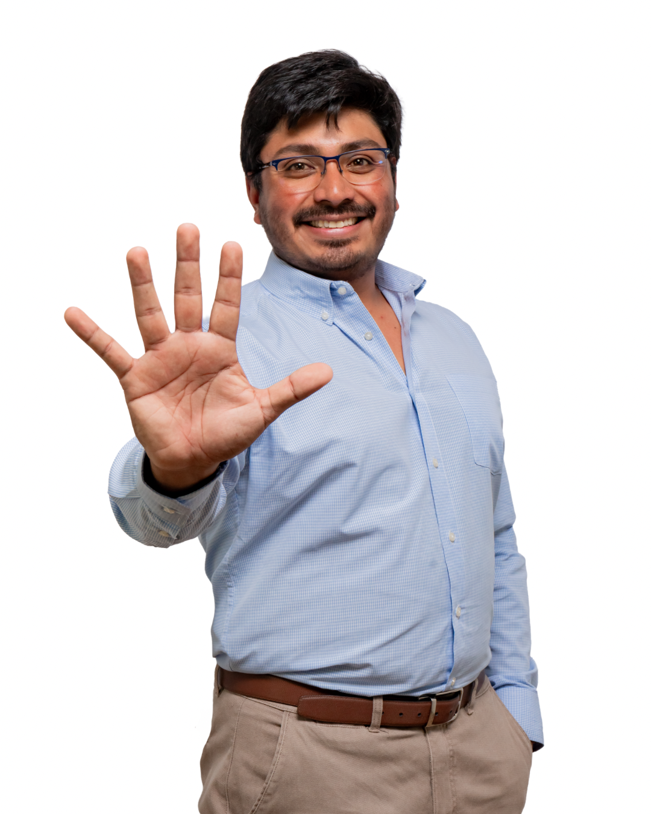
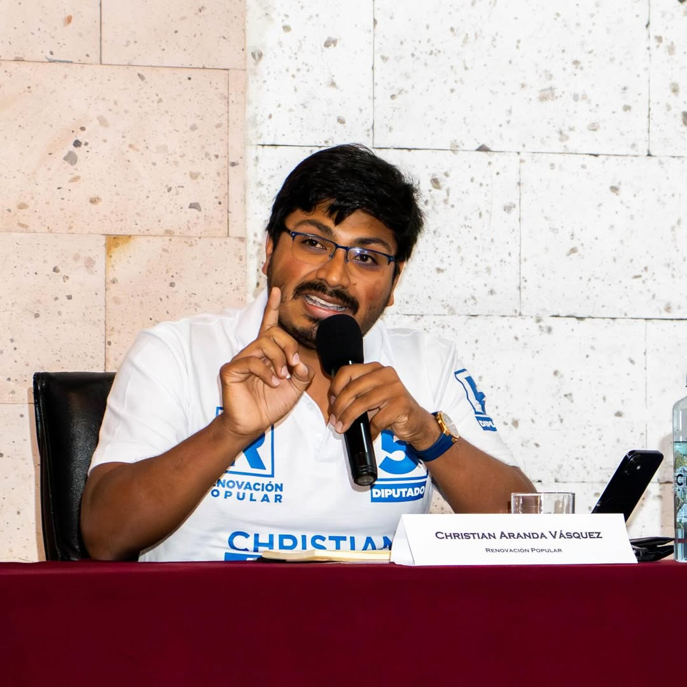
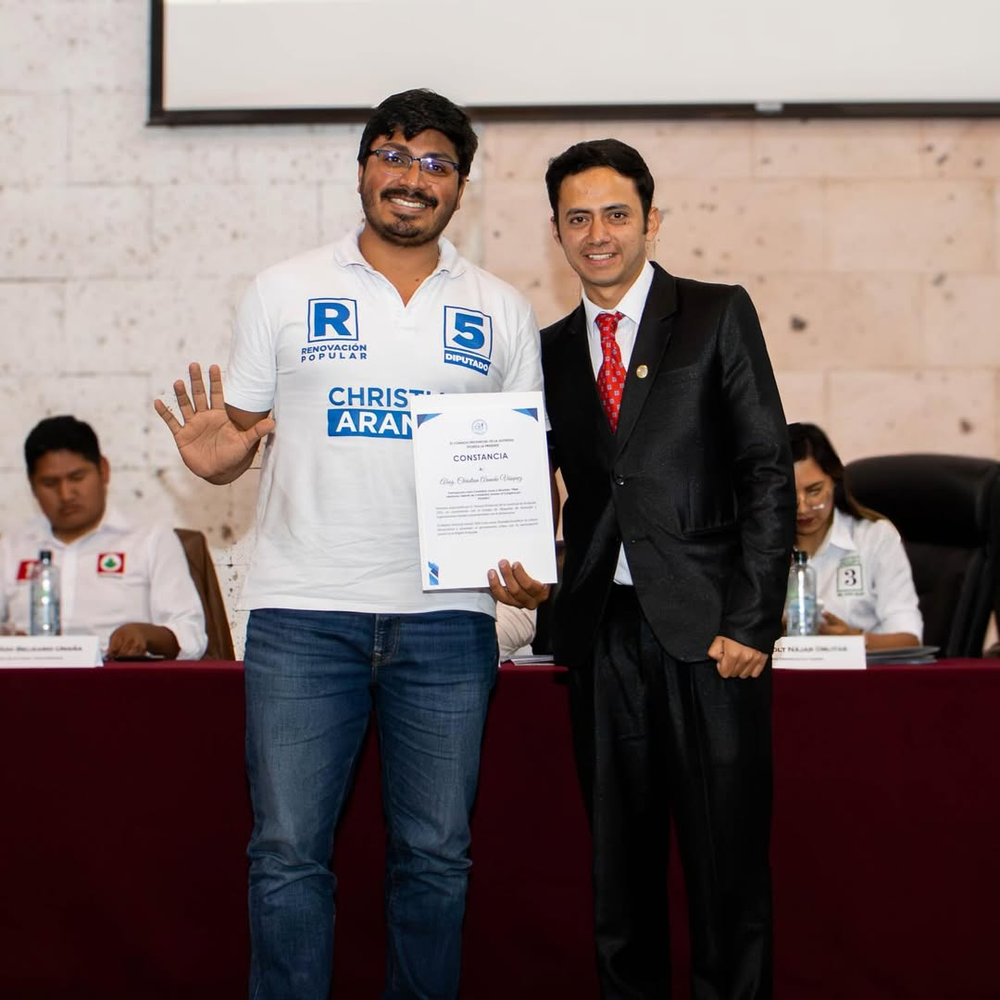

Voces con
Propósito
El gran debate de Arequipa


Jose Augusto Jhonadan Zevallos Banda
Licenciado en Filosofía, Maestro en Gestión y Políticas Públicas, y Bachiller en Administración. Destaca por su versatilidad, al combinar su labor como docente universitario con una sólida trayectoria como especialista y asesor en gestión pública. Cuenta con experiencia liderando áreas de logística, abastecimiento y administración en diversas entidades gubernamentales.
.png)

Renzo Andre Estrada Huerta
Licenciado en Derecho, líder político arequipeño y candidato a la Cámara de Diputados por Avanza País con el número 1 por Arequipa. Fundador del Frente Demócrata Arequipa y de la asociación Libertad Perú, promueve la participación ciudadana y el liderazgo juvenil. Reconocido como Parlamentario Joven del Bicentenario, impulsa una agenda en favor de la poblacion.

Hans Arthur Godoy Quispe
Hijo de migrantes, crecí en PPJJ Augusto Freyre de Hunter sin agua, luz, estudie derecho en la UNSA, maestría en Derecho Civil, especialista en derecho registral y notarial, microempresario en un emprendimiento familiar "Restaurant El Arado". Luchador social presente en la defensa de las causas justas, defendiendo el Valle de Tambo, por una Nueva Constitución, contra la usurpadora Boluarte y otro


Daniel Ernesto Vera Ballón
Ingeniero y político peruano. Fue el primer presidente regional de Arequipa (2003–2006) y diputado nacional (1990–1992). Actualmente es candidato a la Cámara de Diputados por Arequipa en las elecciones de 2026 y promueve proyectos estratégicos como el puerto de Corío para el desarrollo económico del sur, impulsando también la descentralización y la inversión regional.



Christian Aranda
Político y emprendedor arequipeño. Estudió derecho en la Universidad La Salle. Maestría en gestión pública y políticas públicas en la Universidad San Pablo. Especializado en comunicación política y competencias políticas por la Fundación Konrad Adenahuer, Andrés Bello, American University y Political Notwork for Values. Presidente del Centro de Pensamiento Laureles.
Cronograma Operativo del Evento (Run of Show)
Apertura Oficial
Bienvenida y presentación del evento, propósito y neutralidad.
Explicación del formato de rondas y presentación de los moderadores.
Presentación Individual: 1 min para cada uno de los candidatos.
Bloque 1: Seguridad, justicia y lucha contra la corrupción
¿Qué dos acciones concretas impulsará desde el Congreso para mejorar la seguridad ciudadana en Arequipa (extorsión, sicariato, crimen organizado) y cómo medirá los resultados de esas acciones?
Ronda de postura (30 seg c/u). Orden: C1 a C10
Ronda de propuesta (45 seg c/u). Mismo orden: C1 a C10.
Réplicas (hasta 2). Cada réplica: 30 seg + 30 seg respuesta..
Cierre breve de la pregunta y transición..
Seguridad, justicia y lucha contra la corrupción
¿Qué propuesta priorizará para reducir la corrupción en la contratación pública y fortalecer la fiscalización, garantizando que no se politice ni se debilite la lucha anticorrupción?
Ronda de postura (30 seg c/u). Orden: C1 a C10
Ronda de propuesta (45 seg c/u). Mismo orden: C1 a C10.
Réplicas (hasta 2). Cada réplica: 30 seg + 30 seg respuesta..
Margen de seguridad y transición
Bloque 2: Economía, empleo y desarrollo regional
¿Qué medidas legislativas promoverá para impulsar el empleo formal y digno en Arequipa, especialmente para jóvenes, sin precarizar sus derechos laborales?
Ronda de postura (30 seg c/u). Orden: C1 a C10
Ronda de propuesta (45 seg c/u). Mismo orden: C1 a C10.
Réplicas (hasta 2). Cada réplica: 30 seg + 30 seg respuesta..
Margen de seguridad y transición
Economía, empleo y desarrollo regional
¿Qué cambios propondría para mejorar la educación (básica, técnica y superior) y la inserción laboral de los jóvenes (prácticas, meritocracia, formación dual), asegurando calidad y pertinencia?
Ronda de postura (30 seg c/u). Orden: C1 a C10
Ronda de propuesta (45 seg c/u). Mismo orden: C1 a C10.
Réplicas (hasta 2). Cada réplica: 30 seg + 30 seg respuesta..
Cierre del bloque
Bloque 3: Dignidad humana, vida, familia y educación
¿Cuál es su postura frente a la despenalización o ampliación de causales del aborto y frente a la eutanasia? Independientemente de su postura, ¿qué iniciativas concretas impulsará para reducir la mortalidad materna, fortalecer la salud mental y ampliar los cuidados paliativos en el país?
Ronda de postura (30 seg c/u). Orden: C1 a C10
Ronda de propuesta (45 seg c/u). Mismo orden: C1 a C10.
Réplicas (hasta 2). Cada réplica: 30 seg + 30 seg respuesta..
Transición
Dignidad humana, vida, familia y educación
¿Qué enfoque promoverá para prevenir la violencia sexual y el embarazo adolescente, respetando el rol de los padres y la libertad de conciencia?
Además, ¿qué políticas públicas propondrá para fortalecer a la familia en áreas como primera infancia, conciliación trabajo-familia, lucha contra la violencia y cumplimiento de pensiones alimenticias?
Ronda de postura (30 seg c/u). Orden: C1 a C10
Ronda de propuesta (45 seg c/u). Mismo orden: C1 a C10.
Réplicas (hasta 2). Cada réplica: 30 seg + 30 seg respuesta..
Cierre del bloque y palabras finales de los moderadores sobre los temas tratados.
Cierre del evento
Mensaje final de cierre (1.5 minutos por candidato).
Agradecimiento final e invitación al escenario para la Foto Oficial.